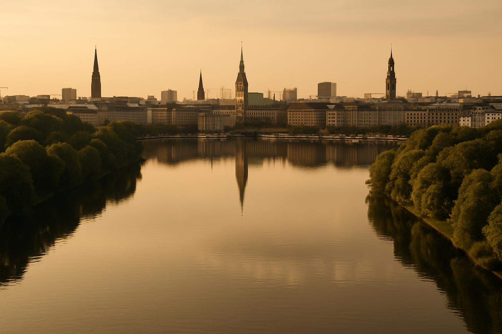
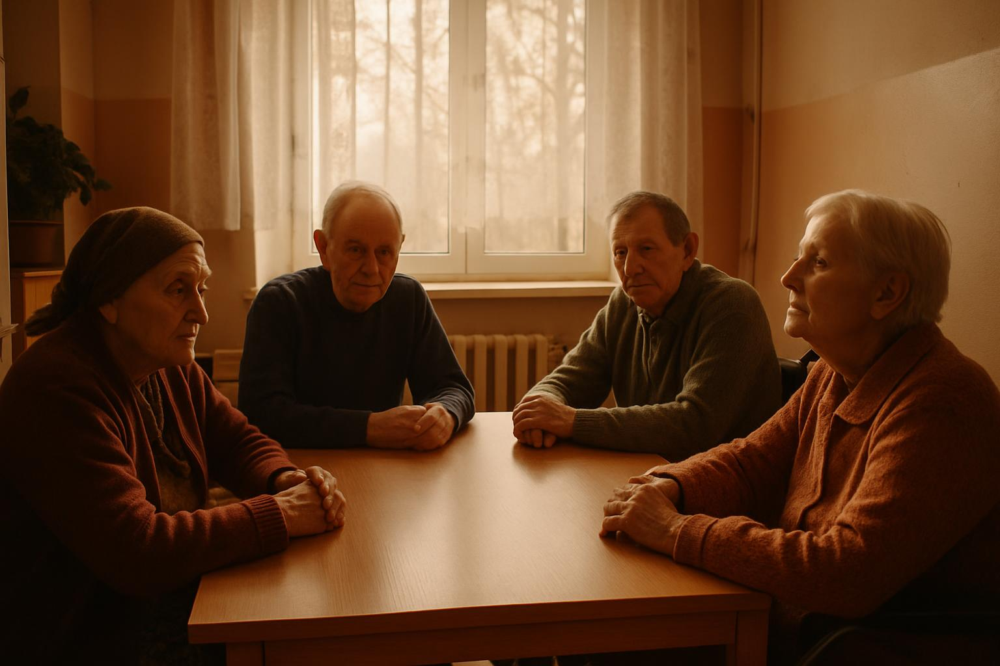
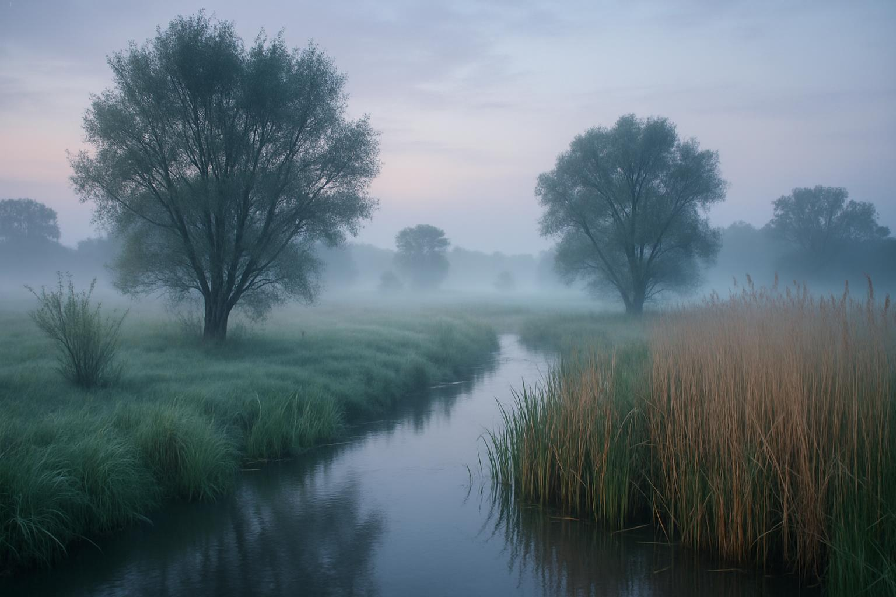
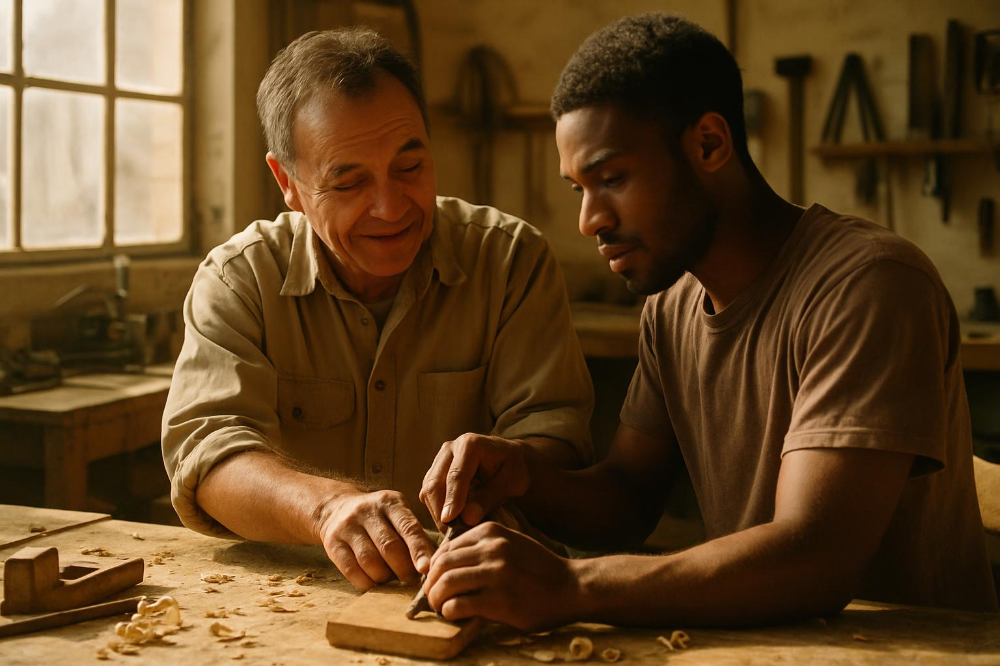
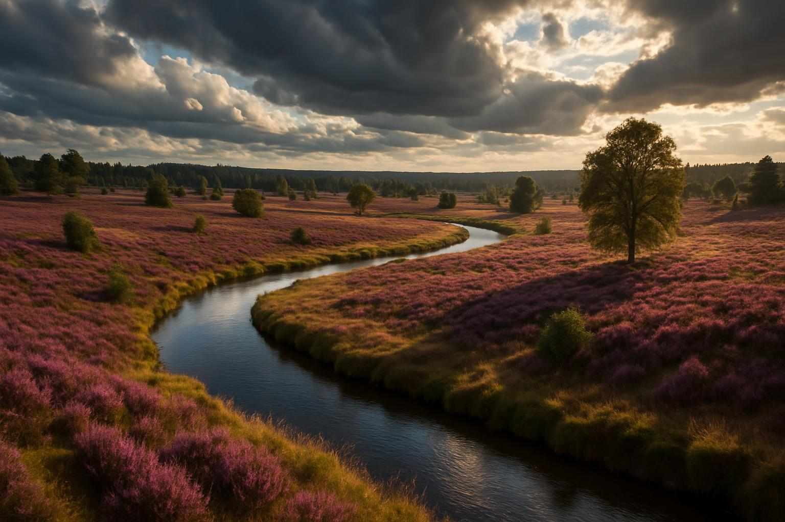

Fachtagung Lebendige Alster
Wissenschaftlicher Austausch zur ökologischen Aufwertung der Alster und ihrer Nebengewässer. Expert:innen diskutieren Renaturierungsmassnahmen.

Wissenschaftlicher Austausch zur ökologischen Aufwertung der Alster und ihrer Nebengewässer. Expert:innen diskutieren Renaturierungsmassnahmen.

Förderung eines Jugendaustauschprogramms zwischen Hamburg und Rumänien. Junge Menschen engagieren sich ehrenamtlich in der Altenpflege.

Entwicklung eines naturnahen Erholungsgebiets im Hamburger Umland. Verbindung von Naturschutz und sanftem Tourismus.
Auszeichnung herausragender wissenschaftlicher Arbeiten an der Universität Hamburg. Der Preis ehrt das Vermächtnis des ersten Universitätspräsidenten.

Präventionsarbeit an Schulen durch ehemalige Strafgefangene. Authentische Berichte warnen Jugendliche vor den Folgen von Kriminalität.

Langfristiges Engagement für den Erhalt der Kulturlandschaft südlich von Hamburg. Biodiversität, extensive Landwirtschaft und Gewässerschutz.